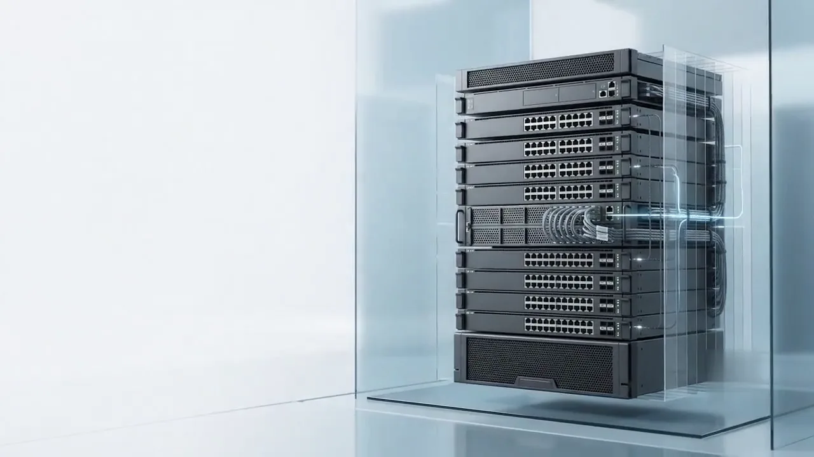

Captured
Turn Physical Racks Into Verified Infrastructure Data
Capture racks, devices, ports, cables, topology, and audit evidence, directly from physical infrastructure, with one simple phone sweep.
Extracted
Ports become readable.
Port grids and cable ends move into structured fields.Structured
Evidence gets organized.
Every observation keeps its source frame.Ready
Rack facts are ready.
Enough structure to become a rack model.Captured facts. Ready to verify.
The sweep becomes device, position, port, cable, and timestamp evidence.

Perceive
Every device. Every rack unit.
A guided sweep separates chassis, ports, labels, and rack-unit position from the physical rack.Cognize
Structured, not guessed.
Switches, patch panels, PDUs, and controllers classify into asset records, with no manual transcription.Evidence
Ready for reconciliation.
A continuously reconciled record (inventory, ports, and evidence) from a single phone sweep.Connect
Every cable, mapped.
Visible port usage, cable paths, and link indicators map against the physical rack evidence.Topology
Physical meets logical.
Observations are checked against CDP, LLDP, ARP, and neighbor data from the live network.Verified
Green means verified.
Most paths resolve green. Amber flags a drift or mismatch the moment it appears.Reconcile
Checked against every system.
New scans compare against CMDB, DCIM, asset, and network records automatically.Drift
Drift doesn't hide.
A mismatch surfaces the moment it appears, not at the next audit cycle.Truth
One verified source.
40-60% of enterprise CMDB records drift from physical reality. RackTrack closes that gap continuously.Scale
Start with one rack.
A single verified rack is the first proof point, not the ceiling.Expand
Then the next rack. Then the row.
Each additional rack confirms the same way: visually, then verified.Footprint
Continuous across the floor.
One workflow scales from a single cabinet to the full data center footprint.Outcomes
One model. Every team.
The same verified record powers different workflows for different teams.Focus
From footprint back to detail.
Capacity, connectivity, compliance, procurement, posture, and incidents, all traceable to one rack.Ready
Six outcomes, one source.
Capacity intelligence, connectivity, compliance evidence, procurement reconciliation, vulnerability posture, and incident location, all from the same verified model.See your first verified rack.
Get a demo and walk through a real sweep, reconciled against your own records.
Get a demo